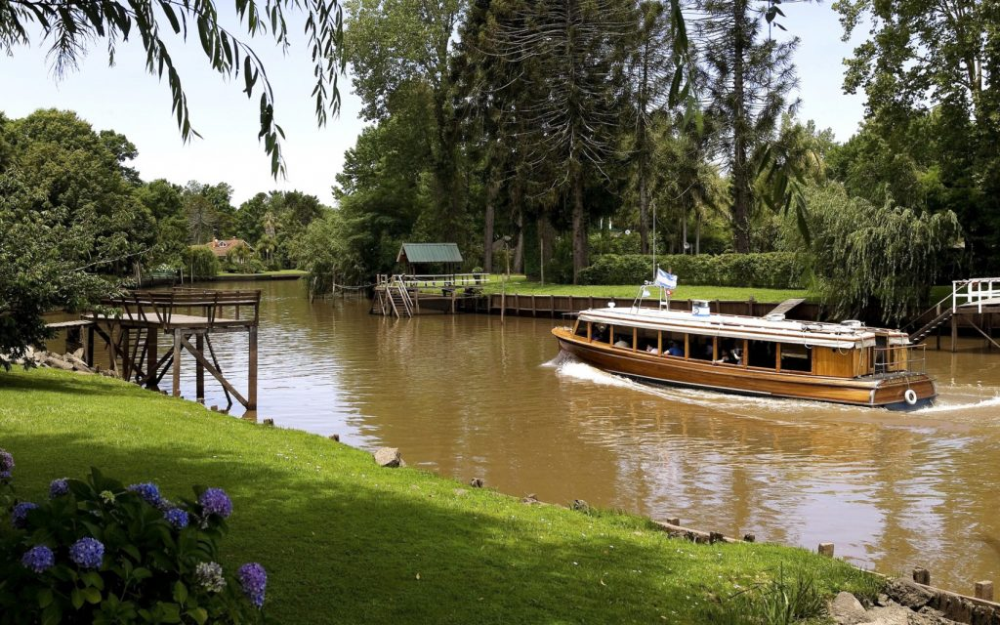
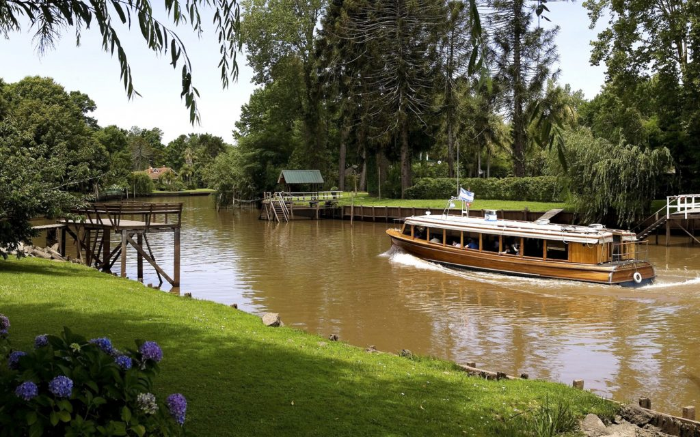

Bienvenidos a la localidad del Tigre
Historia
Antes de la llegada de los colonizadores españoles, la zona de El Tigre estaba habitada por indígenas querandíes. En 1580, Juan de Garay documentó oficialmente la región, comenzando una historia de transformaciones significativas. Durante la colonia, El Tigre sirvió como puerto de contrabando. En 1706, Domingo de Acassuso fundó la Iglesia de San Isidro Labrador, y la región fue conocida como el "Pago de las Conchas" hasta el siglo XX cuando se renombró como Partido de Tigre. El área alcanzó su apogeo comercial en 1790, pero fue devastada por una tormenta en 1805. Importantes eventos en 1806 incluyeron la recuperación de Buenos Aires por el ejército de Santiago de Liniers desde El Tigre, que pasó a ser conocido como el río de la Reconquista. El primer tren llegó en 1865, impulsando el desarrollo local, y en 1872, Daniel María Cazón, quien dio nombre a la principal avenida de la ciudad, promovió mejoras significativas en infraestructura y servicios comunitarios.
Disfruta de la Belleza del Tigre

 
